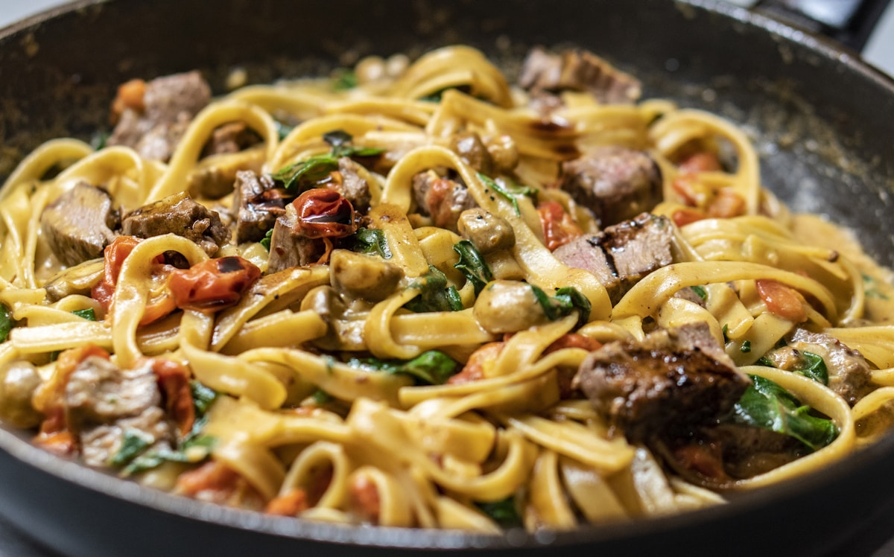
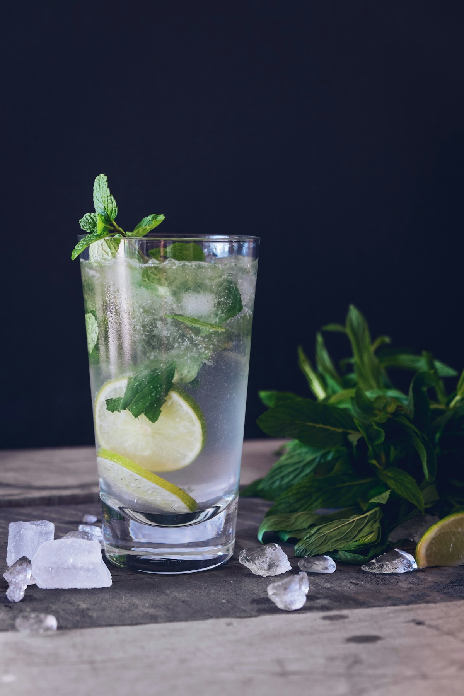

The Zero-Waste Dinner Party: Mise-en-Place, Roasted Stock Reductions, and Creative Culinary Upcycling

Hosting an ambitious multi-course dinner party often generates a mountain of kitchen waste: onion skins, herb stems, carrot peelings, bread crusts, and citrus rinds discarded straight into the compost bin. Yet, in the world's most disciplined professional kitchens, these discarded trimmings are recognized as goldmines of aroma, gelatin, sugars, and natural pigments. Embracing a zero-waste culinary philosophy is not merely an environmental virtue—it is the secret to extracting extraordinary depth, complexity, and economy in your dinner menu.
The Zero-Waste Culinary Credo
In nature, waste does not exist; every byproduct is food for another organism. In the kitchen, every vegetable trim, roasted bone, and citrus peel holds untapped flavor molecules waiting to be liberated through intelligent prep and extraction.
1. The Architecture of Kitchen Mise-en-Place
The French culinary term mise-en-place translates literally to 'everything in its place.' For a dinner party host, rigorous mise-en-place is the difference between an exhausting, chaotic evening spent chained to the stove and an effortless, elegant gathering where the host relaxes alongside their guests.
A professional zero-waste mise-en-place workflow follows five organized stations:
- Station 1 (Scrap Segregation Bins): Three labeled stainless prep bowls on your cutting board: (A) Clean aromatic vegetable trims for roasting, (B) Herb stems and green leaves for infused oils, (C) Citrus rinds for syrups and salts.
- Station 2 (Batch Prep Containers): Pre-diced mirepoix, washed greens, and measured seasonings stored in reusable glass containers.
- Station 3 (Liquid Foundations): Stocks, reductions, and vinaigrettes simmered and chilled 24 hours in advance.
- Station 4 (Thermal Holding & Warming): Ceramic platters pre-warmed in a 150°F holding drawer to prevent hot courses from cooling rapidly upon plating.
- Station 5 (Clean-as-You-Go Sanitation): Hot soapy water and sanitizer basins ready to clean tools immediately after every course transition.

Figure 6.1: Day-old sourdough scraps transformed into crispy golden pangrattato provide crunchy textural depth to pasta.2. The Master Roasted Allium & Root Scrap Stock
Commercial boxed vegetable broths are notoriously watery, flat, and loaded with artificial yeast extracts. In contrast, a house-made roasted scrap stock delivers deep amber color, rich umami, and roasted sweetness:
The Scrap Stock Formula:
- Collection: Save clean onion peels, leek tops, carrot peels, parsnip ends, celery leaves, mushroom stems, and garlic trimmings in a freezer bag. (Avoid bitter brassicas like broccoli or cabbage stems).
- Maillard Roasting: Toss 1 kg of frozen vegetable scraps with olive oil and roast on a sheet pan at 400°F (204°C) for 35 minutes until deeply caramelized and fragrant.
- Gentle Extraction Simmer: Transfer roasted scraps to a stockpot, cover with cold water, add black peppercorns, bay leaf, and kombu kelp (for natural glutamates). Simmer gently for 45 minutes. (Simmering vegetable stocks beyond 60 minutes degrades fresh aromatic terpenes).
- Clarification & Reduction: Strain through a fine-mesh sieve and reduce by half to concentrate savory notes for pan deglazing and soup bases.
| Culinary Scrap Material | Extracted Chemical Component | Upcycled Culinary Creation | Application in Dinner Courses |
|---|---|---|---|
| Herb Stems (Parsley, Basil, Dill) | Lipophilic chlorophyll & essential oils | Vibrant Emerald Herb Oil | Garnish drizzle over soups & purees |
| Stale Sourdough Bread Ends | Caramelized wheat starches | Garlic & Herb Pangrattato | Crispy topping for pasta and roasted roots |
| Citrus Peels (Lemon, Orange) | Limonene essential oils & pectin | Oleo-Saccharum Cordial Syrup | Base for botanical sparkling table elixirs |
| Parmesan Cheese Rinds | Concentrated glutamic acid crystals | Simmered Broth Enhancer | Adds deep umami to risottos and braises |
3. Emerald Herb Oils: Extracting Chlorophyll and Volatile Terpenes
Herb stems contain up to 40% of the plant's essential flavor oils but are discarded due to fibrous texture. Transforming them into brilliant emerald herb oil is a culinary triumph:
- Blanching: Plunge 100g of herb stems and leaves into boiling salted water for exactly 15 seconds, then shock immediately in ice water. This deactivates polyphenol oxidase enzymes, locking in vibrant green chlorophyll.
- High-Speed Blending: Squeeze the herbs completely dry in a towel and blend with 200ml of neutral grapeseed oil in a high-speed blender on maximum speed for 3 minutes. The friction heat warms the oil to 140°F, extracting color and aromatics into the lipid phase.
- Coffee Filter Clarification: Strain through a paper coffee filter overnight in the refrigerator. The resulting oil is crystal-clear, intensely green, and keeps for weeks.

Figure 6.2: Upcycled citrus peel oleo-saccharum forms the base of refreshing zero-proof table elixirs.4. Citrus Oleo-Saccharum: The Zero-Proof Elixir Foundation
When squeezing lemons or oranges for sauces and marinades, the discarded peels contain aromatic essential oils trapped inside microscopic flavedo glands.
The Osmotic Extraction: Toss citrus peels with equal weight granulated sugar in a sealed glass jar and let stand at room temperature for 12 hours. The hygroscopic sugar draws moisture and essential oils out of the peels, creating an intensely fragrant liquid syrup known as oleo-saccharum. Diluted with sparkling water and fresh thyme, it becomes a world-class non-alcoholic table elixir for your dinner guests.
5. Stale Bread Magic: Sourdough Pangrattato
Never discard hardened artisanal bread. Pulse dry sourdough chunks in a food processor into coarse crumbs. Sauté the crumbs in olive oil with minced garlic, chili flakes, and flaky salt over medium heat until deeply golden and crisp. This 'poor man's parmesan' (pangrattato) adds sensational crunch to vegetable courses and handmade pasta dishes.
6. Dehydrated Scrap Salts and Vegetable Umami Powders
Clean leek greens, tomato skins from sauce-making, and mushroom stems can also be dehydrated in a low oven at 170°F (75°C) for 6 hours until bone dry. Pulverized in a spice grinder with flaky sea salt, these dehydrated powders create artisanal finishing salts bursting with concentrated savory glutamates.
7. The Zero-Waste Host Protocol: Peace of Mind on Dinner Night
Adopting a zero-waste mindset streamlines your dinner prep schedule:
- 2 Days Prior: Prepare scrap stock, oleo-saccharum syrups, and herb oils.
- 1 Day Prior: Make dessert bases, marinate proteins, and prep par-cooked root vegetables.
- Morning of Event: Set the tablescape, polish glassware, and batch-mix arrival elixirs.
- Dinner Hour: You are calm, relaxed, and present, spending only 5 to 7 minutes in the kitchen between courses to finish and plate.
8. Frequently Asked Questions on Zero-Waste Culinary Prep
Which vegetable scraps should never go into stock?
Avoid cruciferous vegetables (broccoli, cauliflower, kale stems, cabbage) which release bitter sulfur compounds when simmered, and potato peelings which can make stocks cloudy and starchy.
How long can homemade herb oil be safely stored?
Because herb oil is strained of water and stored in a clean glass bottle in the refrigerator, it maintains its vibrant color and fresh aroma for 2 to 3 weeks.
Can Parmesan rinds be reused after simmering in stock?
Yes. After simmering in a broth, the softened rind can be diced and incorporated into baked polenta or roasted vegetable gratins for rich, savory bites.
How do you prevent food waste when guests have varying appetites?
Serve moderate course portions on smaller plates, and present communal platters of roasted sides in the center of the table so enthusiastic diners can serve themselves seconds effortlessly.
Key Scientific Takeaways
- Zero-waste mise-en-place transforms kitchen trimmings into culinary assets like stocks, oils, and cordials.
- Roasting vegetable scrap collections drives Maillard caramelization, creating rich, full-bodied broths.
- Blanching and high-shear oil blending extracts pure chlorophyll and lipophilic terpenes into emerald herb oils.
- Hygroscopic sugar extraction unlocks aromatic essential oils from citrus peels for zero-proof dinner elixirs.